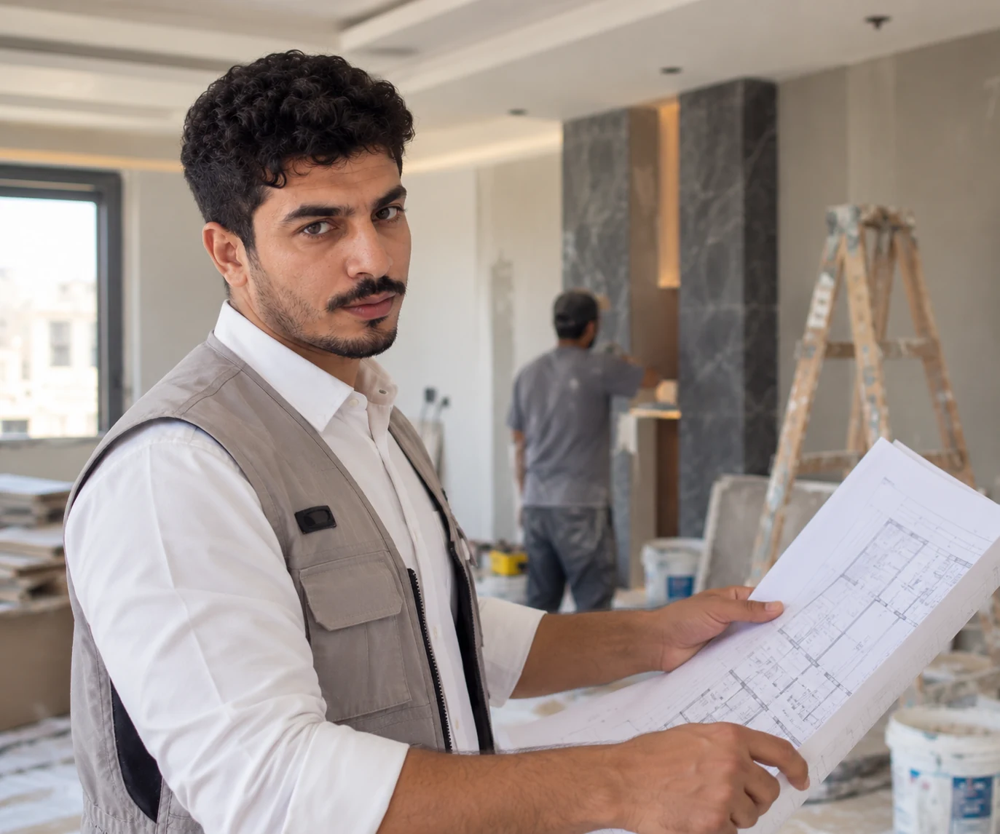

دهانات وترميم وتشطيبات في مكة
خدمات ترميم وتشطيب للمنازل والشقق والفلل في مكة، تشمل تجديد الدهانات والجبس بورد والديكورات الداخلية. بخبرة عملية تقارب 10 سنوات، يساعدك صالح في تقييم احتياج المكان وتحديد العمل المناسب قبل البدء، مع استقبال مشاريع مختارة في جدة حسب نوع المشروع والتوفر.
أرسل صور المكان على واتساب، ونساعدك في معرفة العمل المناسب.

خدمات صالح للدهانات والترميم والجبس والديكور في مكة
من تجديد جزء بسيط إلى أعمال ترميم وتشطيب متكاملة، اختر الخدمة الأقرب لاحتياجك.
 صورة توضيحية
صورة توضيحيةترميم المنازل
تجديد المنازل والشقق والفلل ومعالجة الأجزاء المتضررة وإعادة تأهيلها.
مقاول ترميم في مكة ← صورة توضيحية
صورة توضيحيةالدهانات
دهانات داخلية وخارجية وتجديد الجدران والواجهات بتشطيب مرتب ودقيق.
معلم دهانات في مكة ← صورة توضيحية
صورة توضيحيةجبس بورد
تنفيذ أسقف وجدران وديكورات جبس بورد بما يناسب المساحة والتصميم.
معلم جبس بورد في مكة ← صورة توضيحية
صورة توضيحيةالديكورات والتشطيبات
لمسات وتشطيبات تساعد على تجديد شكل المكان والوصول للنتيجة المطلوبة.
ديكورات وتشطيبات في مكة ←الصور الحالية توضيحية ومصدرها Pexels، وليست من أعمال صالح. سيتم استبدالها تدريجيًا بصور المشاريع الحقيقية.
عندك مشروع في جدة؟
مكة هي منطقة العمل الأساسية لصالح، ونستقبل أيضًا طلبات الترميم والدهانات والجبس والديكورات في جدة حسب نوع المشروع والتوفر.
أدلة قصيرة تساعدك تحدد المطلوب
محتوى عملي يشرح ما الذي تفحصه قبل الدهان أو الترميم أو الجبس والتشطيبات، ثم تستطيع إرسال صور المكان لصالح بتفاصيل أوضح.
مو متأكد وش يحتاج المكان؟
تشققات، دهان قديم، جبس يحتاج تجديد، أو ودك تغيّر شكل البيت؟ ما تحتاج تعرف اسم الخدمة أو تحدد المشكلة بنفسك.
صوّر المكان وأرسل الصور لصالح على واتساب واشرح النتيجة التي تريدها، ونساعدك في تحديد العمل المناسب والخطوة التالية.
أرسل صور المكان على واتسابليش تختار صالح؟
شغل البيت يحتاج شخص تثق فيه قبل أي شيء.
خبرة عملية في الترميم والدهانات والجبس والديكورات.
توضيح العمل المطلوب وما يحتاجه المكان قبل البدء، بدون تعقيد أو أعمال غير ضرورية.
اهتمام بالتشطيب والتفاصيل الصغيرة للوصول إلى نتيجة مرتبة.
احترام الموعد المتفق عليه والوضوح في مدة العمل ومراحل التنفيذ.
تتواصل مع صالح للاستشارة ومناقشة العمل ومتابعة التفاصيل.
من صورة... نبدأ.
طريقة واضحة قبل أي التزام.
صوّر المكان
خذ صورًا واضحة للمكان أو المشكلة.
أرسلها على واتساب
اشرح باختصار ما تريد تغييره.
خذ تقييمًا مبدئيًا
نحدد العمل المناسب، وإذا احتاج معاينة نتفق عليها.
الاتفاق والتنفيذ
بعد تحديد المطلوب والاتفاق تبدأ مرحلة التنفيذ.
«خبرة بُنيت من العمل... مو من الكلام.»
أنا صالح، أعمل في مجال ترميم وتشطيب المنازل في مكة منذ قرابة 10 سنوات، وتشمل أعمالي الترميم وتجديد الدهانات والجبس بورد والديكورات. أركز على وضوح المطلوب مع العميل، والدقة في التنفيذ والتفاصيل، وأستقبل أيضًا مشاريع مختارة في جدة حسب نوع العمل والتوفر.
اختر الخدمة المناسبة لمشروعك في مكة
دهانات داخلية في مكة
تجديد بوية الغرف والمجالس والصالات وتجهيز الجدران والأسقف.
تفاصيل الخدمة ←دهانات خارجية وواجهات في مكة
تقييم وتجهيز الواجهات الخارجية وتحديد نطاق إعادة الطلاء.
تفاصيل الخدمة ←ترميم منازل وشقق في مكة
تجديد التشطيبات المتضررة وترتيب أعمال الشقة أو المنزل.
تفاصيل الخدمة ←جبس بورد في مكة
أسقف وجدران وفواصل جبس وتنسيق شكل السقف مع المساحة.
تفاصيل الخدمة ←ديكورات داخلية في مكة
تنسيق الألوان والجبس والتفاصيل الداخلية للمجالس والغرف.
تفاصيل الخدمة ←تشطيبات منازل في مكة
ربط مراحل التجهيز والجبس والدهانات والتسليم في خطة واضحة.
تفاصيل الخدمة ←للدهان الداخلي والخارجي معًا، ابدأ من صفحة معلم الدهانات والبوية في مكة. ولمشاريع جدة راجع خدمات صالح في جدة.
يمكن هذا سؤالك...
هل الاستشارة والتقييم المبدئي مجاني؟
نعم، يمكنك إرسال صور المكان ووصف المطلوب على واتساب للحصول على استشارة وتقييم أولي دون مقابل.
هل يمكن تحديد السعر من الصور؟
الصور تساعد في فهم العمل وإعطاء تقييم مبدئي، لكن بعض الأعمال تحتاج معاينة للموقع قبل تحديد السعر النهائي.
هل تنفذون أعمالًا بسيطة أم ترميمًا كاملًا فقط؟
يتم تقييم العمل حسب المطلوب، سواء كان تجديد جزء من المكان أو أعمال ترميم وتشطيب أكبر.
هل تخدمون جميع أحياء مكة؟
يتم تنفيذ الأعمال في مختلف أحياء مكة بحسب نوع العمل والموقع.
كم يستغرق تنفيذ العمل؟
تختلف المدة حسب حجم العمل وحالة المكان، ويتم توضيح المدة المتوقعة قبل بدء التنفيذ.
ما الخدمات التي يقدمها صالح في مكة؟
يقدم صالح خدمات ترميم وتجديد المنازل، والدهانات الداخلية والخارجية، والجبس بورد، والديكورات والتشطيبات في مكة.
هل تقدمون خدمات في جدة؟
مكة هي منطقة العمل الأساسية، ويتم استقبال مشاريع مختارة في جدة حسب نوع المشروع وحجمه والتوفر.
عندك شغل في البيت؟ خلّنا نشوفه.
أرسل صور المكان لصالح على واتساب واحصل على استشارة مجانية وتقييم مبدئي قبل أن تقرر.
ابدأ الاستشارة المجانية